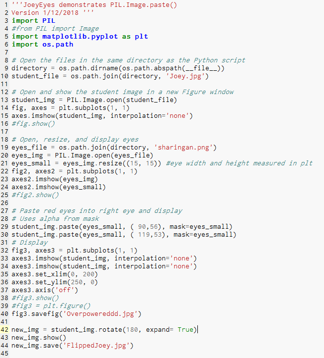
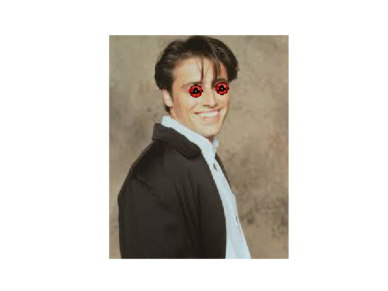
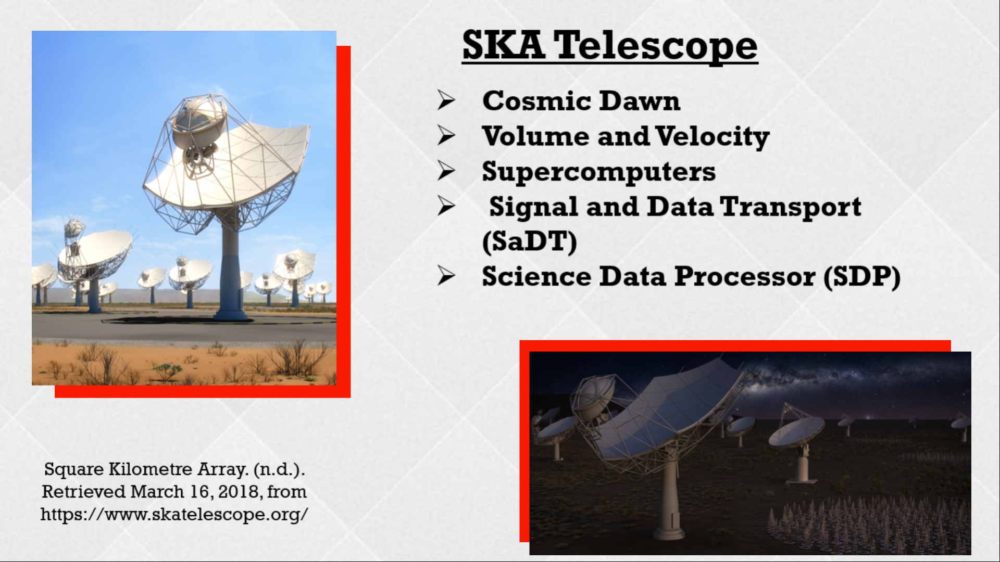

The objective of the story is to make decisions that will enable the player to successfully escape from the killer. In order to create this, my partner, Odum Hit, and I used the Scratch programming language. The program had algorithms with logical steps and mathematical concepts. In other words, a condition will occur if certain sprites are clicked by the player, which as a result affect the outcome. The player was given different choices of whether aiding a person in need, what direction to go, or action to take. For this, different acts and scenes were created. The purpose of the code was to ensure the player had a smooth transition from scene to scene by incoporating wait times. Once an act was triggered, they acted as a one-way-flag to prevent the player from going back to change the outcome of that play. Of course, the player was able to restart the game if they deemed necessary. Ultimately, our project was in fact interactive.
Throughout the project, I was able to learn more about programming and about my own knowledge. My partner and I were able to create an effective code, however there were some weakness. For instance, the music was not able to play for all scenes. In the future, I would like to improve this by combining different codes to ensure it plays. I also believed our code was too simple and would like to create a far more complex code in the future. This can be done by incoporationg more algorithms than the changing scenes or the conditions set. These additions will provide the user with the adequate atmosphere and mood for the story. Despite this, the sprites created were effective in the story. Additionally, through the project I learned how to be able to edit images to my liking. Our project incoporated different scenes so I was able to edit images in an online software accordingly to the theme of the story. Hopefully in the future I will be able to use this skill again and continue to improve it to create more aesthetically pleasing scenes. All in all, I truly enjoyed this project and look forward to the incoming ones.


The App Inventor project was done to create an app that works as a tool to the user. My partner and I decided to create an app that would enable the student to become organized. The user has the choice of using the planner, task list, alarm, and calendar. Each feature in the app is meant to be used by the user to keep track of their studying activities and additional school management. The code was effective and ran smoothly, however, it had some weaknesses. For example, I believe the app would be better if it allowed the user to customize the app, such as background color or different alarm sounds. Additionally, I would like to learn how to possibly add moving animations in each screen to provide the user with a more aesthetically pleasing screen. In conclusion, the project helped me develop the skills needed to create a functionable app and even made me think about creating my own mobile application in the future to help students just like me.


[Click Here to Read the Rest!!] The Story of Shrek
The Interactive Story project was created in the progamming language of Python 2.7.10. the objective of the project was to create an interactive story for the user to follow. The story provided the user with decisions, each decision would affect how the stpry unravels. My partner, Robert Olivares, and I started the process with coming up with the characters and setting of the story to create a plot. Following that step, we created a story map to plan how each decision would affect the next scene in the story. Throughout the project, my partner and I referred back to the story map to ensure all decisions had an outcome. The story was made possible with the Python code that contained defined functions, if-else structure, and raw input from the user. The defined fuctions worked as scenes played out by what the user chooses to do. The if-else structure and raw input were used to give the user options on what to do and to call the next scene after the decision. To say the truth, the story ended up being quite lengthy with the different scenes and outcomes. Despite its length, the code was simple to follow with occasionally mishaps as there is various decisions to follow. For future improvements, I would like to create a shorter story with detail to provide the user with an interesting story but without the inconvinience of how long it takes them to read the whole story.


[View all Versions] Word Scramble
In this project, the programming language used was Python 2.7.10. The program was made with the purpose to entertain the user or player with a fun game of word scrambling. The game helps the user pass time and helps the user get accustomed to the spelling of certain words, which can be useful for learning youths.The game has a total of thirty six words that are automatically scrambled and given to the player one by one if answered correctly. There are three different categories for the words: animal names, foods, and sport names along with three opportuities to guess the correct answer. The project requirements called for different versions of the gane that displays changes in the code to improve the game. I worked with my partners, Bella and Connor, to create three different versions.The first version only allows the player one trial to guess the correct answer, the second version was improved by allowing the player various trials to guess the correct answer through the use of Boolean date along with while loops. The final stage has the improvement to allow the player to correctly guess the answer after two tries as it provides the player with a hint about the correct answer. To reflect on the code, the code was initially simple but the final stage was more complex with the added features. My partners and I worked accordingly to ensure the code would not crash if the user made an error. However, if any possible improvements, I would like to add additionally features to the code to handle user error, such as restarting the game if the user desires or eliminating words after the player has correctly answered it.


The manipulation project was created with the progamming language of Python, with the objective to manipulate an image in order to created an edited version. The code found in Canopy starts with opening the file, or image, in the same directory as the Python script. Following that, the code uses the subplot command to show the original picture in a figure window. Next, the code continues with opening the selected image of the eyes and resizing them in order to fit the frame of the celebrity, Joey, found in the original image. The eyes are then pasted into the given coordinates to make the right eye as well as the left eye. This version of the image is saved under the name "Overpowereddd". The final version of the image is created by simply rotating the whole image and displaying the image. The final edited image is saved as a JPEG file under the name of "FlippedJoey". Personally. this project was easier to grasp than the initial projects we did in class using python. After practicing possible codes, I started feeling comfortable with the coding itself. My partner and I struggled with saving the image into the correct file, but then realized our directory was incorrect. Now, I always make sure to constantly check that the directory is correct in order to save time. This project taught me the basics with image manipulation along with new commands to use when coding with images. In the future, I would like to continue practicing certain codes, such as changing the background, combining various images as one, and adding additional pixels in order to manipulate images.
[Click Here to View the Rest] SQL Injection
The objective of this assignment was to obtain and present information about a selected malware, this one being the SQL injection. To initiate the research, we were partnered up and were given time to choose a desire malware. My partner, Noah, and I selected SQL Injection as it consists of data bases and the language is closer to human-language. To note, SQL injcetions are one of the most common walwares found in the internet. To start of, we used Office 365 Powerpoint in order to be able to simultaneously work on the presentation without distorted each others research. By using this service, we were able to split the work equally and complete the assignment before the due date. Noah choice to present information about the timeline and possible user protection from the injection. I attained information about the language, vunerability, and exploit of the malware.SQL Injections occurs when a developer accepts user input directly placed into a SQL(Structured Query Language) Statement and does not properly validate or filter out dangerous characters. By doimg so, the attacker can control the server and manipulate the data, Most occurences of the injection results in the attacker inserting expolited statements into the database, allowing him/her to delete and obtain personal data from the web page. The first instance of the SQL injection was discovered in December 1998 by the hacker and security consultant, Jeff Forristal, also know as the Rain Forest Puppy. As mentioned before, SQL injcetion is very common annd still continues to be a security threat. However, there are possible measures that can be taken to prevent injection, such as continously validatng and sanitizing data submitted by users. After all the information was added to the different slides, we provided various visuals for the audience. Overall, the presentation reached its intended purpose, yet, I acknowledge possible improvements for the future. To improve the presentation I would like to add additional facts about Jeff and explore how exactly he was able to discover the malware as well as adding more visuals for the presentation.

Through the presentation, the task at hand was to introduce a computing innovation related to big data collection or processing. Through sraching credible sources for an innovation, I came across the Square Kilometre Array. The purpose of the innovation is to answer the unkwon questions about our universe, going back to the fist stars and to learn how black holes formed an era most known as the "Dark Ages". Without a doubt, the SKA will enable astronomers to map the dark matter distribution across the universe. All these actions would be done through bid data collection and big data processing as it uses volume and velocity. For instance, the SKA would ingest one terabyte of data per second, that has an equivalent of roughly a million minutes of music in just seconds. Quite incredible! Despite its benefits, the SKA will also raise concerns for data analygists are still unsure on how will they be capable of storing such amounts of data. Additionally,the telescope would be in need of supercomputers, which could be an expense concern for how much they cost to manufacture. Evidently, big data holds its benefits and cons, however, it holds a promising future. If I were to given more time to modify my presentation, I would like to provide the audience with examples of how exactly data would be processed and trasported through the SKA and also add more details concerning the developers of the innovation.


[Click Here to View Raw Data] Dog Adoptions Raw Data
The purpose of the data analysis was to answer the question about which month dogs are adopted
the most cumulatively from the years 2012 to 2017 in Los Angeles, California. My partner, Katrina, and I were wanted to answer
this question because we were aware that the amount of dogs in shelters has increased over the years,so we wanted to know
if the amount of adoptions has increased as well. Futhermore, this also enables us to see when dog adoptions are the most in
trend. To obtain the raw data, we surfed the web and found statistics provided by the Department of Animal Services and converted
the file into an excel document. Of course, we removed unnecessary data as it would distort our results. From there, we used the values
to create a pie chart and bar graph. Based on the dats, July proves to be the most popular month for dog adoptions. If further reasearch
done on the topic, I would be able to examine more factors that could affect dog adoptions, this way we would obtain a greater insight
into when truly is the time to adopt.